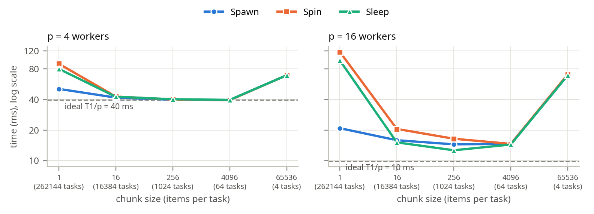
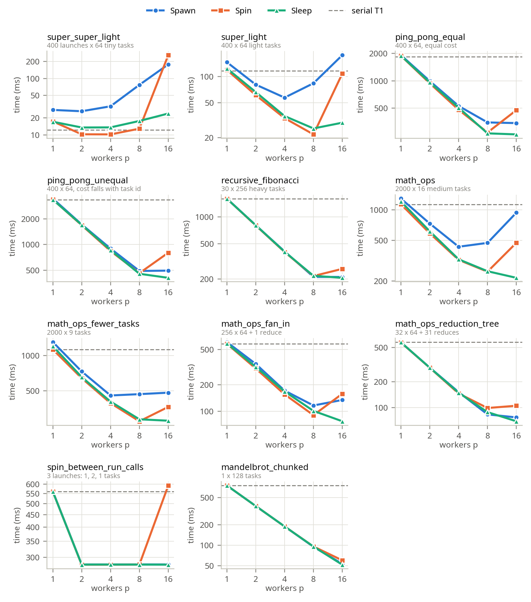
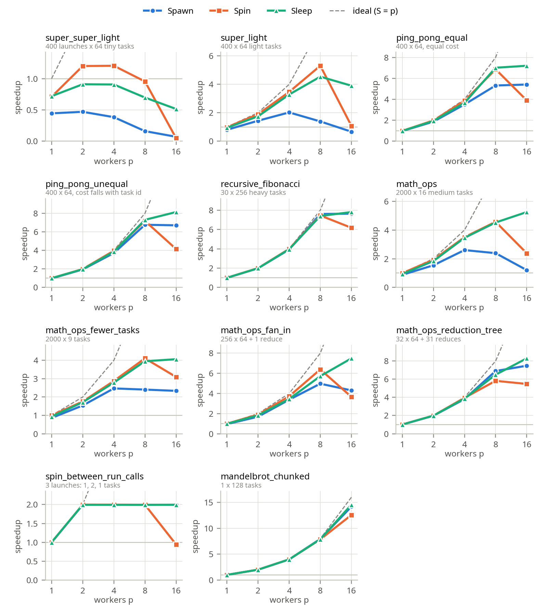
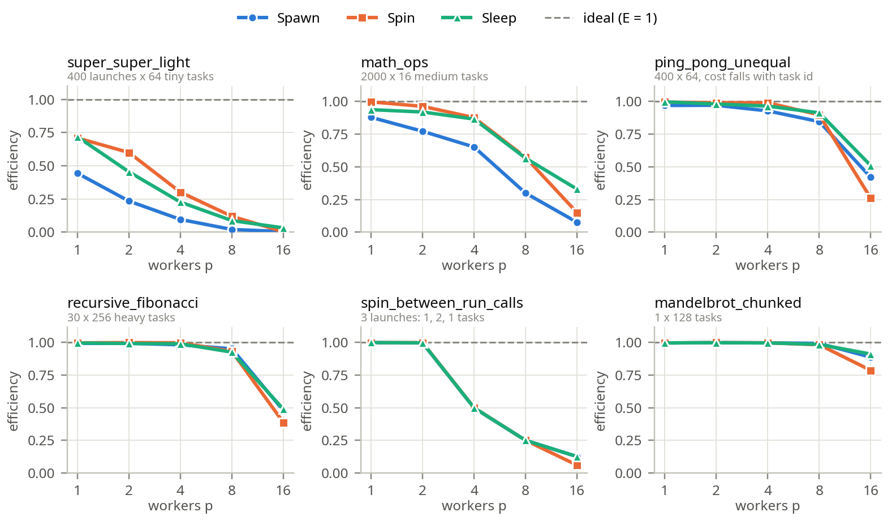

| Student | Izen Abbas |
|---|---|
| Roll number | 23L-0748 |
| Program / semester | BS(CS)-7G · Fall 2026 |
| Instructor | Mubashar Hussain |
| Due date | Wednesday, 14 October 2026 |
| CPU | Intel Core i7-10875H (Comet Lake), one socket |
|---|---|
| Cores / hardware threads | 8 physical cores, 16 hardware threads (2-way SMT) |
| Clock | Turbo Boost disabled (intel_pstate/no_turbo = 1), so every core runs at ≤ 2.3 GHz. This keeps run-to-run timing stable. |
| Caches | 32 KB L1d and 256 KB L2 per core; 16 MB shared L3 |
| Operating system | Ubuntu 26.04.1 LTS, Linux 7.0.0-38-generic |
| Compiler | g++ 15.2.0 with the supplied Makefile flags: -O3 -std=c++11 -Wall |
Interpreting worker counts. With p ≤ 8, every worker can have its own physical core. At p = 16, two workers share each core as SMT siblings. Siblings share the core's execution units, so the second one adds much less than a real core, and gains between p = 8 and p = 16 should be small. The calling thread is not counted in p. It sleeps in Spawn (in join) and in Sleep (on a condition variable), but it busy-waits in Spin. So Spin at p = 16 has 17 runnable threads on 16 hardware threads.
Statistic. Every reported time is the minimum of 5 runs. ./runtasks -n p -i 5 <test> creates a fresh task system for each run and prints the minimum for each implementation. The minimum is used throughout.
Definitions. T1 is the runtime of the supplied serial implementation (TaskSystemSerial): the minimum over all its runs in the sweep, which is 25 runs per workload. Sp = T1/Tp and Ep = Sp/p, where p is the number of worker threads (-n). Because T1 is the serial code, Sp includes every overhead a task system adds. That is why Spawn's S1 can be below 1.
What is timed. The harness times only the test's run()/sync() calls. Creating and destroying a thread pool happens outside the timed region. Spawn creates its threads inside run(), so that cost is always timed. This is the correct comparison for a long-lived runtime, but it hides the one-off pool start-up cost.
Sweep. p ∈ {1, 2, 4, 8, 16} for all 11 supplied synchronous workloads and the Part 4 workloads (part1to4_synchronous build), and for the Part 5 tests (part5_async_deps build).
| Workload | Launches × tasks | One task | Character |
|---|---|---|---|
super_super_light | 400 × 64 | copies 512 ints | almost no work per task |
super_light | 400 × 64 | 512 elements × 32-iteration loop | light tasks |
ping_pong_equal | 400 × 64 | 8192 elements, equal cost | streams 4 MB per launch |
ping_pong_unequal | 400 × 64 | cost falls linearly with task id | non-uniform: task 0 ≈ 2× average, task 63 ≈ 0 |
recursive_fibonacci | 30 × 256 | recursive fib(25) | coarse, compute-bound |
math_operations_in_tight_for_loop | 2000 × 16 | 32 elements × 150 exp/log/mul | medium tasks, many launches |
…_fewer_tasks | 2000 × 9 | 56–64 elements | only 9 tasks per launch |
…_fan_in | 256 × 64, then 1 × 1 | math tasks, then one reduce | serial reduce at the end |
…_reduction_tree | 32 × 64, then 31 × 1 | math tasks, then pairwise reduces | 31 single-task launches |
spin_between_run_calls | 3 launches: 1, 2, 1 tasks | the 2 middle tasks compute fib(40) | at most 2 workers busy |
mandelbrot_chunked | 1 × 128 | interleaved image rows | one coarse launch |
All three parallel task systems assign task ids dynamically, in increasing order: a free worker claims the next unclaimed id from a shared counter. A task is counted as finished only after runTask() returns, never when it is claimed. The calling thread does not execute tasks; it only waits.
TaskSystemParallelSpawn::runstd::atomic<int> next_task(0);
auto worker = [&]() {
for (int id = next_task++; id < num_total_tasks; id = next_task++)
runnable->runTask(id, num_total_tasks);
};
// min(num_threads, num_total_tasks) threads run worker(); the caller joins all of them.
Shared scheduler state.
std::atomic<int>. fetch_add returns each value exactly once, so every id in [0, n) goes to exactly one worker.runnable and num_total_tasks. Shared, but read-only during the launch. Creating a thread makes them visible to it.join(). That is also what makes run() synchronous: it returns only after every worker has run out of ids and exited.No more than num_threads threads are ever created, and none is created that would find no task.
TaskSystemParallelThreadPoolSpinningThe constructor starts num_threads workers that live until the destructor sets shutdown_ and joins them. mutex_ guards the current launch (runnable_, num_total_tasks_, next_task_). tasks_done_, has_work_ and shutdown_ are atomics.
while (!shutdown_) { // worker loop
if (!has_work_) continue; // idle: spin on an atomic load
std::unique_lock<std::mutex> lock(mutex_);
if (next_task_ >= num_total_tasks_) continue; // lost the race for the last task
int task_id = next_task_++;
if (next_task_ == num_total_tasks_) has_work_ = false;
/* copy runnable_ and num_total_tasks_, unlock, run the task */
tasks_done_++; // counted after the task finished
}
// run(): publish the launch under mutex_ (reset counters, has_work_ = n > 0),
// then spin: while (tasks_done_ < n) {}
Idle workers spin on a plain atomic load (has_work_) and take the mutex only when a task is probably available. A spin built from repeated lock/unlock would make idle workers fight working ones for the mutex. The design stays correct across consecutive launches for two reasons:
tasks_done_ for launch k happens before run(k) returns, so the reset in run(k+1) cannot drop or misattribute an increment.TaskSystemParallelThreadPoolSleepingstd::unique_lock<std::mutex> lock(mutex_); // worker loop
while (true) {
work_cv_.wait(lock, [this] { return shutdown_ || next_task_ < num_total_tasks_; });
if (shutdown_) return;
int task_id = next_task_++;
/* copy runnable_ and num_total_tasks_ */
lock.unlock(); runnable->runTask(task_id, num_total_tasks); lock.lock();
if (++tasks_done_ == num_total_tasks_) done_cv_.notify_one(); // last task wakes run()
}
// run(): lock; publish the launch; work_cv_.notify_all();
// done_cv_.wait(lock, [this] { return tasks_done_ == num_total_tasks_; });
All state is guarded by one mutex. After finishing a task, a worker keeps the lock to record the completion and claim its next task, so each task costs one lock round trip. The destructor sets shutdown_ under the lock, calls notify_all() and joins. No thread busy-waits anywhere.
The added test is exactly_once_stress in tests/tests.h, registered in tests/main.cpp. It makes 20 rounds of back-to-back launches with task counts 0, 1, 2, 3, 5, 7, 8, 9, 15, 16, 17, 31, 33, 63, 64, 65, 127, 1000 and 4099. That covers very few tasks, many tasks, and counts that are not divisible by any power-of-two worker count. Each task busy-waits for a task-dependent 0–2 µs, so tasks finish out of order, then atomically increments a counter for its id. Right after each run() returns, every counter must be exactly 1. The test fails if any task ran twice (a duplicate claim), never ran, or had not finished when run() returned.
It passes for all implementations at p = 1, 2, 3, 5, 8, 16 and 32, including 30 repeated runs. All supplied tests pass too (Appendix B), and ThreadSanitizer reports no races.
recursive_fibonacci. It is compute-bound with no memory traffic, has 256 identical tasks per launch (far more than p), and only 30 launches, so launch overhead is negligible. I expected S ≈ 7 at p = 8 and 10–30% more at p = 16 from SMT.super_super_light. A task copies 512 ints (about 0.5 µs) and there are 400 launches, so creating and joining threads in every launch should cost more than the work. I expected Spawn to be slower than serial at every p.ping_pong_unequal): dynamic assignment of 64 tasks should absorb the cost skew, and memory traffic should limit scaling at p = 4–8.The three chosen workloads are super_super_light (very small tasks), recursive_fibonacci (substantial work per task) and ping_pong_unequal (non-uniform task cost). Appendix A has every workload and implementation.
| Impl. | p = 1 | p = 2 | p = 4 | p = 8 | p = 16 | ||||||||||
|---|---|---|---|---|---|---|---|---|---|---|---|---|---|---|---|
| Tp (ms) | Sp | Ep | Tp (ms) | Sp | Ep | Tp (ms) | Sp | Ep | Tp (ms) | Sp | Ep | Tp (ms) | Sp | Ep | |
super_super_light · T1 (Serial) = 12.3 ms | |||||||||||||||
| Spawn | 27.8 | 0.44 | 0.44 | 26.3 | 0.47 | 0.23 | 32.2 | 0.38 | 0.10 | 77.3 | 0.16 | 0.02 | 178.1 | 0.07 | 0.00 |
recursive_fibonacci · T1 (Serial) = 1,604.6 ms | |||||||||||||||
| Spawn | 1,616.1 | 0.99 | 0.99 | 807.9 | 1.99 | 0.99 | 408.6 | 3.93 | 0.98 | 210.8 | 7.61 | 0.95 | 209.9 | 7.64 | 0.48 |
ping_pong_unequal · T1 (Serial) = 3,330.9 ms | |||||||||||||||
| Spawn | 3,438.2 | 0.97 | 0.97 | 1,716.4 | 1.94 | 0.97 | 898.0 | 3.71 | 0.93 | 492.5 | 6.76 | 0.85 | 496.8 | 6.71 | 0.42 |
First worker count where adding workers gains less than 10%.
super_super_light: p = 2. Doubling to 2 gains only 5% (27.8 → 26.3 ms), and every further doubling makes it slower: 32.2, 77.3 and 178.1 ms. The extra time is almost exactly the cost of creating more threads. Spawn exceeds the spinning pool by 55 µs per launch at p = 4 and 161 µs at p = 8, i.e. about 14–20 µs per thread created and joined, while one launch contains only about 31 µs of work (12.3 ms / 400).recursive_fibonacci: p = 16. From 1 to 8 every doubling gains 48–50% (S8 = 7.61). From 8 to 16 it gains 0.4%. p = 16 adds no cores, only SMT siblings, and this recursive call/branch-heavy code already keeps a core's execution resources busy, so two threads per core just share them.ping_pong_unequal: p = 16. It gains 45–50% per doubling up to 8 (S8 = 6.76), then −0.9% from 8 to 16, for the same SMT reason. Each launch also streams the 2 MB input and output arrays through the shared L3, which the siblings share as well.Static vs dynamic assignment for the irregular workload. In ping_pong_unequal, element i costs about 2·iters·(1 − i/N), so task t of 64 costs about 2(1 − (t+0.5)/64) times the average: task 0 about 2×, task 63 about 0.02×.
fetch_add per task, roughly 50–100 ns when the cache line moves between cores, so 64 × 100 ns ≈ 6 µs per launch. Each launch here does 2.2 ms of work at p = 4, so the cost is negligible.Dynamic assignment is therefore expected to balance this workload better at negligible cost. That matches the measurement: Spawn reaches E4 = 0.93 and E8 = 0.85 on ping_pong_unequal, the same as on ping_pong_equal. The Part 4 example measures the difference directly: the static split takes 20.15 ms and the dynamic one 11.13 ms (Section 6). Dynamic assignment loses only when tasks are so small that the per-task claim is comparable to the task itself (Section 6.3).
A correct run with little or no speedup. super_super_light under Spawn produces correct results but Sp = 0.44, 0.47, 0.38, 0.16 and 0.07 for p = 1 to 16. At p = 16 it takes 178 ms against 12.3 ms serially. A launch holds about 31 µs of useful work but Spawn creates and joins up to 16 threads per launch at about 20 µs each, so the program spends more than 90% of its time on thread management. A second example is spin_between_run_calls, where Sp stays at 1.99 for every p ≥ 2: the only heavy launch has 2 tasks, so at most 2 workers are ever useful.
| Workload | T1 (ms) | p | Spawn (ms) | Spin (ms) | Sleep (ms) |
|---|---|---|---|---|---|
super_super_light | 12.3 | 4 | 32.2 | 10.2 | 13.6 |
| 8 | 77.3 | 12.9 | 17.7 | ||
| 16 | 178.1 | 259.7 | 24.0 | ||
super_light | 116.0 | 4 | 57.4 | 33.5 | 35.4 |
| 8 | 83.7 | 21.9 | 25.6 | ||
| 16 | 175.1 | 108.1 | 29.7 | ||
math_operations_in_tight_for_loop | 1,128.7 | 4 | 433.5 | 322.2 | 326.4 |
| 8 | 472.8 | 246.9 | 249.4 | ||
| 16 | 935.8 | 473.8 | 214.8 | ||
recursive_fibonacci | 1,604.6 | 4 | 408.6 | 402.2 | 405.3 |
| 8 | 210.8 | 215.3 | 216.7 | ||
| 16 | 209.9 | 259.7 | 205.4 | ||
mandelbrot_chunked | 753.5 | 4 | 189.0 | 188.9 | 189.0 |
| 8 | 94.9 | 95.9 | 95.6 | ||
| 16 | 53.1 | 59.9 | 51.7 |
Fine- vs coarse-grained workloads. Replacing per-launch thread creation with a persistent pool helps exactly where launches are short.
super_light drops from 83.7 ms (Spawn) to 21.9 ms (Spin), 3.8× faster. math_operations_in_tight_for_loop drops from 472.8 to 246.9 ms (1.9×), and super_super_light at p = 4 from 32.2 to 10.2 ms.recursive_fibonacci 210.8 vs 215.3 ms, mandelbrot_chunked 94.9 vs 95.9 ms.The reason is that thread creation is a fixed cost per launch, about 15–20 µs per thread. Compare it with the work in one launch:
recursive_fibonacci: about 53 ms per launch (1605 ms / 30), so the overhead is under 0.5%.mandelbrot_chunked: a single launch.super_light: 0.29 ms per launch (116 ms / 400), so 8 thread creations (about 0.15 ms) are half the launch.Little or no work for some workers. In spin_between_run_calls, the middle launch has 2 tasks, so p − 2 workers have nothing to do. Up to p = 8, Spin matches Sleep (about 280 ms). At p = 16, Spin takes 592.9 ms against 280.2 ms for Sleep.
The idle workers each execute the has_work_ load-and-branch loop non-stop, and the calling thread spins on tasks_done_. At p = 16 that is 17 runnable threads on 16 hardware threads. The two workers computing fib(40) must share their cores with spinning SMT siblings and are time-sliced against the extra thread, so the useful work takes twice as long. The answers stay correct, but the spinners occupy hardware threads, take execution slots from their SMT siblings, keep the cores out of idle power states, and steal CPU from any other program.
The same effect wrecks Spin on every many-launch workload at p = 16. super_super_light goes from 12.9 ms at p = 8 to 259.7 ms at p = 16, and ping_pong_equal from 269 to 475 ms. When a worker holding a task is descheduled, everyone waits for it.
Faster than Spawn, yet efficiency still falls. On super_light, Spin is faster than Spawn at every p ≤ 8, but its efficiency still falls: E = 0.95, 0.87, 0.66 at p = 2, 4, 8 (Spawn: 0.72, 0.50, 0.17). Both are true because the pool removes only one overhead term, thread creation. Each launch still pays costs that do not shrink with p:
Meanwhile the useful work per worker shrinks as 1/p. An overhead that stays constant while the work divides makes Tp fall more slowly than 1/p, so Ep = T1/(p·Tp) declines even though the pool beats Spawn at every p.
Separating thread management from useful computation. I take useful computation per worker as T1/p and overhead as Op = Tp − T1/p. For super_light at p = 8:
The same calculation gives 72–76 µs per launch at p = 1–2 and 113–231 µs at p = 8–16 for math_operations_in_tight_for_loop. Limitations:
When a worker sleeps, and what wakes it. A worker sleeps on work_cv_ while !shutdown_ && next_task_ >= num_total_tasks_, i.e. while the current launch has no unclaimed task. Two events can make the condition true:
run() publishes a new launch (next_task_ = 0, num_total_tasks_ = n > 0).shutdown_.Both happen while holding mutex_, and both are followed by work_cv_.notify_all(). Finishing a task can never make the condition true, so completions do not wake sleeping workers.
What the calling thread waits for. run() sleeps on done_cv_ while tasks_done_ != num_total_tasks_. Whichever worker raises tasks_done_ to num_total_tasks_, i.e. the last task to finish (not necessarily task n−1), calls done_cv_.notify_one(). For n = 0 the condition already holds and run() returns immediately.
An incorrect interleaving. Suppose completion were tracked at claim time, i.e. run() waited for next_task_ == n or a worker incremented tasks_done_ before calling runTask:
next_task_ becomes n) and releases the mutex.run(), even though task n−1 has not started.run() again, which resets the counters.run() has already returned. Its results arrive too late. If it then updates the shared completion counter, that update counts toward the new launch, so the next run() can return one task early too.My implementation increments tasks_done_ only after runTask() returns, and under the mutex. So tasks_done_ == n implies that every task has returned.
Why the condition is checked in a loop. wait(lock, pred) is while (!pred()) wait(lock);. The loop is required for four reasons:
notify_all() wakes every sleeping worker, but a launch with fewer tasks than workers leaves most of them nothing to do. In spin_between_run_calls, 16 workers wake for a 1-task launch; 15 must re-check and go back to sleep.| Workload | T1 (ms) | p | Spawn (ms) | Spin (ms) | Sleep (ms) |
|---|---|---|---|---|---|
super_super_light | 12.3 | 2 | 26.3 | 10.3 | 13.6 |
| 4 | 32.2 | 10.2 | 13.6 | ||
| 8 | 77.3 | 12.9 | 17.7 | ||
| 16 | 178.1 | 259.7 | 24.0 | ||
math_operations_in_tight_for_loop | 1,128.7 | 2 | 731.8 | 586.8 | 614.4 |
| 4 | 433.5 | 322.2 | 326.4 | ||
| 8 | 472.8 | 246.9 | 249.4 | ||
| 16 | 935.8 | 473.8 | 214.8 | ||
spin_between_run_calls | 559.3 | 2 | 280.6 | 280.0 | 280.4 |
| 4 | 280.5 | 280.1 | 280.5 | ||
| 8 | 280.8 | 280.5 | 280.4 | ||
| 16 | 280.6 | 592.9 | 280.2 |
Fine-grained workload. On super_super_light with p = 2–8, Spin is fastest: 10.3, 10.2 and 12.9 ms, against Sleep's 13.6, 13.6 and 17.7 ms. Over 400 launches, Sleep's 3.3–4.8 ms extra is 8–12 µs per launch, the price of putting threads to sleep and waking them. Each launch has to wake every worker (a futex system call per thread, plus the time for the scheduler to run it), and when the last task finishes, the caller must also be woken. A spinning worker notices the new launch within about 100 ns. On math_operations_in_tight_for_loop (2000 launches of 16 tasks) the two are within 1–5% for p ≤ 8.
Workload with idle gaps. In spin_between_run_calls, most workers have nothing to do during the 2-task launch. At p = 16, Sleep (280.2 ms) is 2.1× faster than Spin (592.9 ms), because sleeping workers leave the cores to the two threads doing real work. The same holds whenever p reaches the hardware-thread count. At p = 16, Sleep beats Spin on every workload, for example super_super_light 24.0 vs 259.7 ms and math_operations_in_tight_for_loop 214.8 vs 473.8 ms.
Why neither is fastest everywhere. Spinning trades CPU time for reaction time: it wins when launches are short and back to back and every spinner has a hardware thread to itself. Sleeping trades a few microseconds of wake-up latency per launch for zero cost while idle: it wins when workers are idle for long stretches, when there are more runnable threads than hardware threads, and when SMT siblings need the core. Neither cost dominates in all cases, so the faster implementation depends on the workload.
Added workload. IrregularTask in tests/tests.h gives every item a known cost by busy-waiting on steady_clock. Items in the first half are cheap and items in the second half are expensive (the handout's 1,1,1,1,10,10,10,10 pattern). Each task processes chunk consecutive items, so a launch has ⌈N/chunk⌉ tasks, and every item must be processed exactly once. It runs through the existing task systems; no separate scheduler was written.
irregular_example_dynamic / irregular_example_static: the handout's 8 items (1, 1, 1, 1, 10, 10, 10, 10 ms). Chunk 1 gives 8 tasks, claimed next-task. Chunk 2 gives 4 contiguous tasks, so with 4 workers each worker gets exactly one block: the static contiguous assignment.irregular_chunk_{1,16,256,4096,65536}: N = 218 fine-grained items costing 0.1 µs (first half) or 1 µs (second half), in chunks of 1 to 65536 (= N/4) items per task.
| Assignment | W0 busy | W1 busy | W2 busy | W3 busy | Makespan | Mean utilization |
|---|---|---|---|---|---|---|
| Static contiguous: Wi gets tasks 2i, 2i+1 | T0+T1 = 2 ms (10%) | T2+T3 = 2 ms (10%) | T4+T5 = 20 ms (100%) | T6+T7 = 20 ms (100%) | 20 ms | 44 / (4×20) = 55% |
| Dynamic next-task | T0, T4 = 11 ms (100%) | T1, T5 = 11 ms (100%) | T2, T6 = 11 ms (100%) | T3, T7 = 11 ms (100%) | 11 ms | 44 / (4×11) = 100% |
Utilization = busy time ÷ makespan. Under static assignment, W0 and W1 finish their two 1 ms tasks at t = 2 ms and then sit idle for 18 ms, while W2 and W3 each run two 10 ms tasks back to back. With dynamic assignment, the four 1 ms tasks are claimed first. At t = 1 ms every worker claims one 10 ms task, and all finish at 11 ms. That equals total work ÷ p = 44/4, so it is optimal: 1.82× better than static.
| Test | timeline | Serial | Spawn | Spin | Sleep |
|---|---|---|---|---|---|
irregular_example_static | 20 | 44.00 | 20.15 | 20.01 | 20.07 |
irregular_example_dynamic | 11 | 44.00 | 11.13 | 11.01 | 11.06 |
The measurements match the timelines within 0.15 ms for all three task systems: static 20.01–20.15 ms vs 20 ms, dynamic 11.01–11.13 ms vs 11 ms, serial 44.00 ms. Dynamic assignment is 1.8× faster with the same work.
The fine-grained workload has N = 218 items costing 0.1 µs or 1 µs. Its measured serial time is T1 = 158.6 ms, so T ≈ 605 ns of useful work per item on average; the extra over the nominal 550 ns is the timer loop itself. The experiment uses five chunk sizes, from 1 item per task (262144 tasks) to 65536 items per task (4 tasks).
| Chunk | Tasks | p = 4 | p = 16 | ||||
|---|---|---|---|---|---|---|---|
| Spawn | Spin | Sleep | Spawn | Spin | Sleep | ||
| 1 | 262,144 | 50.9 | 90.0 | 80.2 | 20.9 | 117.8 | 97.2 |
| 16 | 16,384 | 41.8 | 42.8 | 42.6 | 15.9 | 20.5 | 15.1 |
| 256 | 1,024 | 39.8 | 39.9 | 40.2 | 14.5 | 16.4 | 12.7 |
| 4096 | 64 | 39.6 | 39.4 | 39.7 | 14.6 | 14.6 | 14.4 |
| 65536 | 4 | 69.4 | 69.3 | 69.3 | 69.5 | 70.9 | 69.5 |

A chunk size that reduces scheduling overhead: 16, and beyond it 256. At p = 4, chunk 1 costs 90.0 ms (Spin) and 80.2 ms (Sleep), more than twice the ideal 39.6 ms. Every item pays a mutex round trip. Chunk 16 divides the number of claims by 16 and brings both pools to 42.6–42.8 ms. Chunks 256 and 4096 reach 39.4–40.2 ms, within 1.5% of ideal.
A chunk size that worsens load balance and reduces concurrency: 65536 = N/4. There are now only 4 tasks. At p = 4, two tasks hold all the 1 µs items. Each takes about 69 ms, so the makespan is 69.3 ms: 1.75× the best chunk size, and exactly the static contiguous imbalance from Section 6.1, scaled up. At p = 16, the same 4 tasks leave 12 of the 16 workers with nothing to do, and the time stays at 69.5 ms against an ideal of 9.9 ms.
At p = 16, even the best chunk (12.7 ms) is 1.3× the ideal. Two workers on one core slow each other's busy-wait loop, which itself performs work (reading the timer).
Why very fine granularity destroys dynamic scheduling: H/T. With c items per scheduled unit, a worker spends c·T on useful work and H on scheduling for each unit, so efficiency is at most cT/(cT + H) = 1/(1 + H/(cT)).
From the chunk-1 and chunk-256 runs, I estimate H = (Tp(1) − Tp(256))·p/N:
fetch_add): 169 ns at p = 4, 391 ns at p = 16.For the pools at p = 4, H/T ≈ 1.0–1.3, so at least half of every worker's time is scheduling. At p = 16, H/T ≈ 9. H grows with p because every claim goes through the same mutex: claims are serialized, so the pool cannot hand out more than about 3 million tasks per second (262144 claims in roughly 80–100 ms), no matter how many workers wait.
Dynamic scheduling only pays off while H/T is small: its balance benefit is at most one unit's cost at the end of the launch, but its overhead is paid on every unit. Chunking divides the overhead per item by c (H/(16T) ≈ 0.08 at p = 4), and up to about 4096 items per task there are still enough tasks to balance the load. The cheaper atomic claim in Spawn keeps H/T at about 0.3 at p = 4, which is why Spawn is the fastest at chunk 1 (50.9 ms).
part5_async_deps/tasksys.cpp, sleeping pool)struct Launch { IRunnable* runnable; int num_total_tasks, next_task, tasks_done, unmet_deps;
std::vector<TaskID> dependents; }; // launches waiting for this one
std::unordered_map<TaskID, Launch> launches_; // unfinished launches only
std::deque<TaskID> ready_; // deps satisfied, tasks left to hand out
// one mutex_ guards everything; work_cv_ wakes workers, done_cv_ wakes sync()
runAsyncWithDeps, all under the mutex. It gives the launch the next id (0, 1, 2, …, so ids are unique). For every dependency still in launches_, it appends the new id to that dependency's dependents and increments unmet_deps; a dependency that is no longer in the table has already finished. If unmet_deps == 0, the launch goes into ready_ and notify_all() wakes the workers. It then returns without waiting.ready_ is non-empty, then claims the next task of the launch at the front. When the last task of that launch has been claimed, the launch leaves ready_, so other workers move on to the next ready launch while its stragglers finish. Independent ready launches therefore run concurrently. After runTask returns, the worker relocks and increments tasks_done. If that was the last task, it calls launchFinished(id).launchFinished removes the launch from the table and decrements unmet_deps of each dependent. Dependents that reach 0 enter ready_ (with notify_all). If the table is now empty, it calls done_cv_.notify_all().sync() waits on done_cv_ until the table is empty. run(r, n) is runAsyncWithDeps(r, n, {}) followed by sync(), so it stays a correct synchronous launch. A launch with 0 tasks is finished as soon as it becomes ready. The destructor calls sync(), then stops and joins the workers.abcd_dag_async builds the handout graph with exact busy-wait task costs:
The first task of each launch to start checks that every dependency launch is complete, meaning its last task has already finished. Each launch counts its started and finished tasks, which must both equal its task count. All launches must be done after sync().
abcd_dag_split_async is the same graph with B replaced by four independent sub-launches B1–B4, each of 2 tasks × 2 ms (the same 16 ms of work); D depends on B1–B4 and C. Because the task costs are exact, the measured times can be compared directly with the schedules below. The cost is wall-clock busy-waiting, so two workers sharing a core still each take exactly 1 ms per A task. Real computation would slow down on SMT siblings.
Ready sets and mandatory orderings. At submission, only A is ready. When the last task of A finishes, B and C become ready at the same instant and may run concurrently: there is no edge between them, and their 8 tasks can share the workers. D becomes ready only when both B and C have finished. The mandatory orderings are A→B, A→C, B→D and C→D (so A→D); B and C are unordered.
Total work.
Critical-path lower bound. Assumptions:
Under these assumptions, a launch lasts at least as long as its longest task: A 1 ms, B 8 ms, C 4 ms, D 2 ms. The paths are A→B→D = 1 + 8 + 2 = 11 ms and A→C→D = 1 + 4 + 2 = 7 ms, so the critical path is T∞ = 11 ms (through B). With p workers, Tp ≥ max(T∞, W/p), giving T2 ≥ max(11, 116) = 116 ms and T4 ≥ max(11, 58) = 58 ms.
Schedules for 2 and 4 workers. Figure 7.1 is the greedy schedule my runtime follows: free workers claim the next task, and ready launches are served FIFO (B before C). Both schedules respect the dependencies, since B and C start only after the last A task and D only after the later of B and C. They also respect capacity: at most p tasks run at any time.

Why doubling the workers does not halve the time. The same greedy schedule gives 232, 116, 60, 32 and 20 ms for p = 1, 2, 4, 8 and 16, i.e. ×2.0, ×1.93, ×1.88 and ×1.6 per doubling. Three effects stop the halving:
At p = 16, A takes 8 ms, B/C takes 8 ms and D takes 4 ms. The time is now dominated by B's 8 ms tasks, not by the amount of work.
Bookkeeping when the final task of a launch finishes. The worker relocks, raises tasks_done to num_total_tasks, and in launchFinished:
runAsyncWithDeps.dependents list, decrementing each dependent's unmet_deps.ready_, with notify_all).sync() if no unfinished launch remains.Only the direct dependents of the finishing launch can change state at that instant, and only those for which it was the last unfinished dependency. Nothing else is scanned. In this graph, A's completion makes both B and C ready. Whichever of B and C finishes first changes nothing (D still has one unmet dependency). The later one makes D ready.
A race that could start a dependent early, and the invariant that prevents it. Suppose a launch were treated as complete when its last task was claimed (next_task == n) rather than when it finished:
strict_diamond_deps_async and my abcd_dag_async detect exactly this.A second variant is check-then-register without the lock. A new launch sees dependency X as unfinished. X then finishes and processes a dependents list that does not yet contain the new launch. The new launch then registers and waits forever.
The invariant: a launch is in ready_, or has any task handed out, only if every launch it depends on has tasks_done == num_total_tasks, i.e. all of its runTask calls have returned. It holds because of three facts:
unmet_deps counts exactly the dependencies that were unfinished at registration, and registration and completion are serialized by the same mutex.unmet_deps is decremented only by launchFinished, which runs after the last runTask has returned.ready_.| p | abcd_dag_async | abcd_dag_split_async | ||||
|---|---|---|---|---|---|---|
| schedule | measured | diff. | schedule | measured | diff. | |
| 1 | 232 | 232.2 | +0.2 | 232 | 232.1 | +0.1 |
| 2 | 116 | 116.2 | +0.2 | 116 | 116.2 | +0.2 |
| 4 | 60 | 60.1 | +0.1 | 60 | 60.2 | +0.2 |
| 8 | 32 | 32.1 | +0.1 | 30 | 30.1 | +0.1 |
| 16 | 20 | 23.1 | +3.1 | 16 | 18.7 | +2.7 |
With 2–8 workers, the measured makespans are within 0.2 ms of the hand-computed schedules: 116.2 ms at p = 2 against the bound of 116, 60.1 ms at p = 4, and 32.1 ms at p = 8. Doubling p from 2 to 4 gives 1.93×, not 2×, exactly as the barrier analysis predicts. At p = 16, every hardware thread runs a busy-waiting worker, so any operating-system activity preempts one of them. Both variants come out about 3 ms above the schedule there (23.1 vs 20 ms and 18.7 vs 16 ms).
Splitting the long launch B into four independent sub-launches. Splitting B into B1–B4 (2 tasks × 2 ms each) shortens the critical path from 11 ms (A→B→D) to 7 ms (A→C→D, with C now the longest), and adds 6 more tasks that can run at the same time.
The extra launches are not free. Each one costs a hash-table entry, a dependency edge (D now has 5 dependencies instead of 2), a pass through launchFinished and a wake-up of the workers: roughly 10–40 µs each. super_super_light_async runs 400 launches of tiny tasks in about 17 ms, i.e. about 40 µs per launch including its 64 tasks. Against millisecond tasks this is negligible, but if B's tasks took a few microseconds, three extra launches would cost more than the parallelism saves. So extra concurrency helps only when there are idle workers to use it, when the scheduler orders the work well, and when task cost far exceeds launch cost.
Independent launches run concurrently. The table below submits the same bulk launches with run() (one launch at a time) and with runAsyncWithDeps() followed by a single sync().
| Workload | p | run() each launch | async + sync() | gain |
|---|---|---|---|---|
math_operations_in_tight_for_loop_fewer_tasks | 1 | 1,735.0 | 1,133.0 | 1.53× |
| 2 | 699.9 | 571.9 | 1.22× | |
| 4 | 416.3 | 280.2 | 1.49× | |
| 8 | 297.2 | 147.1 | 2.02× | |
| 16 | 282.7 | 121.6 | 2.32× | |
math_operations_in_tight_for_loop_fan_in | 1 | 594.2 | 569.0 | 1.04× |
| 2 | 322.1 | 311.5 | 1.03× | |
| 4 | 165.6 | 149.1 | 1.11× | |
| 8 | 92.0 | 90.9 | 1.01× | |
| 16 | 78.0 | 63.6 | 1.23× |
…_fewer_tasks has only 9 tasks per launch. With run(), at most 9 of the 16 workers are busy and every launch ends at a barrier. Submitted asynchronously, the 2000 launches have no dependencies, so free workers take tasks from the next ready launch while the current one finishes: 282.7 → 121.6 ms at p = 16 (2.3×). …_fan_in gains 1.2× at p = 16. Its 256 math launches overlap, but the final reduce depends on all of them, so the critical path still ends with one serial task.
At p = 1, the synchronous column pays two sleep/wake round trips per launch: the single worker and the waiting caller each sleep and are woken, and each of the 2000 launches incurs this. Most of the p = 1 difference comes from that.



| Workload | Dominant limitation | Evidence |
|---|---|---|
super_super_light | Thread-management overhead (Spawn); synchronization (pools) | About 31 µs of work per launch. Spawn: S16 = 0.07, about 20 µs per thread created. Even Sleep peaks at S = 0.91: it waits 8–12 µs per launch for wake-ups. |
super_light | Task granularity, plus per-launch overhead | 0.29 ms of work per launch. Spawn S8 = 1.39 vs Spin S8 = 5.31; no implementation exceeds 5.3. |
ping_pong_equal | Synchronization at the end of each launch, plus shared L3 traffic | Sleep S8 = 7.0 but only 7.2 at 16. Spawn levels off at 5.4 (thread management). |
ping_pong_unequal | Load imbalance at the end of each launch (mostly removed by dynamic claiming) | Efficiency matches the equal version (Sleep E8 = 0.91), so the skew is absorbed. |
recursive_fibonacci | None of the software limits up to 8; at 16, only SMT | S8 = 7.4–7.6, S16 = 7.6–7.8 (Spin 6.2, its own spinning). |
math_operations_in_tight_for_loop | Task granularity and synchronization (16 small tasks per launch, 2000 launches) | Spawn S16 = 1.21; Sleep S16 = 5.25. |
…_fewer_tasks | Insufficient concurrency (9 tasks per launch) | Sleep: 285.3 ms at p = 8, 277.5 ms at p = 16. Async submission reaches 121.6 ms. |
…_fan_in / …_reduction_tree | Insufficient concurrency in the reduce phase (single-task launches) | Sleep S16 = 7.5 / 8.3, half of ideal. |
spin_between_run_calls | Insufficient concurrency (2 tasks); idle waiting for Spin | S stuck at 2.0 for every p ≥ 2; Spin S16 = 0.94. |
mandelbrot_chunked | No significant limit; it scales close to ideal | S8 = 7.9, S16 = 14.6 (Sleep). Interleaved rows balance the work. |
Confirmed. super_super_light scaled worst: Spawn is slower than serial at every p (S = 0.07–0.47). Also as predicted:
super_light at p = 8) and tied on mandelbrot_chunked.super_super_light for p ≤ 8, and 2.1× faster on spin_between_run_calls at p = 16.Contradicted. I predicted recursive_fibonacci would scale best and gain 10–30% from SMT at p = 16. It gained nothing (7.61 → 7.64 for Spawn). mandelbrot_chunked scaled best: 7.94 at p = 8 and 14.2–14.6 at p = 16, i.e. SMT nearly doubled its speed.
The difference is how fully one thread uses a core:
I had treated "compute-bound" as one category; SMT gains depend on how much idle capacity each core has. My ping_pong prediction was also too pessimistic. It reached S8 ≈ 7, not saturation at 4–8, because the 4 MB of arrays fit in the 16 MB L3 and each worker's slice stays in its own core's cache.
mandelbrot_chunked and recursive_fibonacci, where it matched the pools within 1–3%. It also suits code that must not keep idle threads alive between calls, since it is the simplest design with no shutdown logic. Avoid it when launches are frequent or short: it pays about 15–20 µs per thread per launch (S16 = 0.07 on super_super_light).super_super_light and super_light at p ≤ 8). Avoid it when some workers often have no work, when p reaches the hardware-thread count (from p = 8 to p = 16 it got slower on 10 of the 11 workloads), and on shared or battery-powered machines.Every time is the minimum of 5 runs. T1 is the supplied serial implementation (minimum of its 25 runs). Sp = T1/Tp, Ep = Sp/p, and p is the number of worker threads. Part 4 and Part 5 measurements are in Sections 6 and 7.
| Impl. | p = 1 | p = 2 | p = 4 | p = 8 | p = 16 | ||||||||||
|---|---|---|---|---|---|---|---|---|---|---|---|---|---|---|---|
| Tp (ms) | Sp | Ep | Tp (ms) | Sp | Ep | Tp (ms) | Sp | Ep | Tp (ms) | Sp | Ep | Tp (ms) | Sp | Ep | |
super_super_light · T1 (Serial) = 12.3 ms | |||||||||||||||
| Spawn | 27.8 | 0.44 | 0.44 | 26.3 | 0.47 | 0.23 | 32.2 | 0.38 | 0.10 | 77.3 | 0.16 | 0.02 | 178.1 | 0.07 | 0.00 |
| Spin | 17.4 | 0.71 | 0.71 | 10.3 | 1.20 | 0.60 | 10.2 | 1.21 | 0.30 | 12.9 | 0.95 | 0.12 | 259.7 | 0.05 | 0.00 |
| Sleep | 17.2 | 0.72 | 0.72 | 13.6 | 0.91 | 0.45 | 13.6 | 0.91 | 0.23 | 17.7 | 0.70 | 0.09 | 24.0 | 0.51 | 0.03 |
super_light · T1 (Serial) = 116.0 ms | |||||||||||||||
| Spawn | 145.6 | 0.80 | 0.80 | 80.8 | 1.44 | 0.72 | 57.4 | 2.02 | 0.51 | 83.7 | 1.39 | 0.17 | 175.1 | 0.66 | 0.04 |
| Spin | 118.9 | 0.98 | 0.98 | 61.3 | 1.89 | 0.95 | 33.5 | 3.47 | 0.87 | 21.9 | 5.31 | 0.66 | 108.1 | 1.07 | 0.07 |
| Sleep | 123.5 | 0.94 | 0.94 | 66.4 | 1.75 | 0.87 | 35.4 | 3.28 | 0.82 | 25.6 | 4.54 | 0.57 | 29.7 | 3.90 | 0.24 |
ping_pong_equal · T1 (Serial) = 1,849.8 ms | |||||||||||||||
| Spawn | 1,919.3 | 0.96 | 0.96 | 994.7 | 1.86 | 0.93 | 528.2 | 3.50 | 0.88 | 348.0 | 5.32 | 0.66 | 342.0 | 5.41 | 0.34 |
| Spin | 1,887.7 | 0.98 | 0.98 | 939.1 | 1.97 | 0.98 | 479.7 | 3.86 | 0.96 | 269.4 | 6.87 | 0.86 | 475.1 | 3.89 | 0.24 |
| Sleep | 1,896.1 | 0.98 | 0.98 | 960.8 | 1.93 | 0.96 | 506.2 | 3.65 | 0.91 | 263.7 | 7.01 | 0.88 | 256.8 | 7.20 | 0.45 |
ping_pong_unequal · T1 (Serial) = 3,330.9 ms | |||||||||||||||
| Spawn | 3,438.2 | 0.97 | 0.97 | 1,716.4 | 1.94 | 0.97 | 898.0 | 3.71 | 0.93 | 492.5 | 6.76 | 0.85 | 496.8 | 6.71 | 0.42 |
| Spin | 3,348.8 | 0.99 | 0.99 | 1,682.3 | 1.98 | 0.99 | 841.3 | 3.96 | 0.99 | 464.2 | 7.18 | 0.90 | 803.4 | 4.15 | 0.26 |
| Sleep | 3,343.1 | 1.00 | 1.00 | 1,699.5 | 1.96 | 0.98 | 863.9 | 3.86 | 0.96 | 456.5 | 7.30 | 0.91 | 409.4 | 8.14 | 0.51 |
recursive_fibonacci · T1 (Serial) = 1,604.6 ms | |||||||||||||||
| Spawn | 1,616.1 | 0.99 | 0.99 | 807.9 | 1.99 | 0.99 | 408.6 | 3.93 | 0.98 | 210.8 | 7.61 | 0.95 | 209.9 | 7.64 | 0.48 |
| Spin | 1,610.0 | 1.00 | 1.00 | 803.1 | 2.00 | 1.00 | 402.2 | 3.99 | 1.00 | 215.3 | 7.45 | 0.93 | 259.7 | 6.18 | 0.39 |
| Sleep | 1,611.4 | 1.00 | 1.00 | 808.8 | 1.98 | 0.99 | 405.3 | 3.96 | 0.99 | 216.7 | 7.40 | 0.93 | 205.4 | 7.81 | 0.49 |
math_operations_in_tight_for_loop · T1 (Serial) = 1,128.7 ms | |||||||||||||||
| Spawn | 1,286.0 | 0.88 | 0.88 | 731.8 | 1.54 | 0.77 | 433.5 | 2.60 | 0.65 | 472.8 | 2.39 | 0.30 | 935.8 | 1.21 | 0.08 |
| Spin | 1,133.2 | 1.00 | 1.00 | 586.8 | 1.92 | 0.96 | 322.2 | 3.50 | 0.88 | 246.9 | 4.57 | 0.57 | 473.8 | 2.38 | 0.15 |
| Sleep | 1,205.5 | 0.94 | 0.94 | 614.4 | 1.84 | 0.92 | 326.4 | 3.46 | 0.86 | 249.4 | 4.53 | 0.57 | 214.8 | 5.25 | 0.33 |
math_operations_in_tight_for_loop_fewer_tasks · T1 (Serial) = 1,127.9 ms | |||||||||||||||
| Spawn | 1,310.3 | 0.86 | 0.86 | 732.9 | 1.54 | 0.77 | 456.5 | 2.47 | 0.62 | 468.7 | 2.41 | 0.30 | 482.5 | 2.34 | 0.15 |
| Spin | 1,132.5 | 1.00 | 1.00 | 642.1 | 1.76 | 0.88 | 392.3 | 2.88 | 0.72 | 274.4 | 4.11 | 0.51 | 364.4 | 3.10 | 0.19 |
| Sleep | 1,208.5 | 0.93 | 0.93 | 656.8 | 1.72 | 0.86 | 404.7 | 2.79 | 0.70 | 285.3 | 3.95 | 0.49 | 277.5 | 4.06 | 0.25 |
math_operations_in_tight_for_loop_fan_in · T1 (Serial) = 578.9 ms | |||||||||||||||
| Spawn | 605.3 | 0.96 | 0.96 | 342.7 | 1.69 | 0.84 | 171.4 | 3.38 | 0.84 | 116.5 | 4.97 | 0.62 | 134.6 | 4.30 | 0.27 |
| Spin | 579.0 | 1.00 | 1.00 | 304.5 | 1.90 | 0.95 | 155.5 | 3.72 | 0.93 | 90.6 | 6.39 | 0.80 | 158.1 | 3.66 | 0.23 |
| Sleep | 584.8 | 0.99 | 0.99 | 317.3 | 1.82 | 0.91 | 167.8 | 3.45 | 0.86 | 101.2 | 5.72 | 0.71 | 77.3 | 7.49 | 0.47 |
math_operations_in_tight_for_loop_reduction_tree · T1 (Serial) = 577.4 ms | |||||||||||||||
| Spawn | 570.9 | 1.01 | 1.01 | 291.7 | 1.98 | 0.99 | 151.7 | 3.81 | 0.95 | 83.7 | 6.90 | 0.86 | 77.2 | 7.48 | 0.47 |
| Spin | 570.4 | 1.01 | 1.01 | 290.1 | 1.99 | 1.00 | 146.2 | 3.95 | 0.99 | 99.2 | 5.82 | 0.73 | 105.5 | 5.48 | 0.34 |
| Sleep | 573.2 | 1.01 | 1.01 | 291.2 | 1.98 | 0.99 | 149.2 | 3.87 | 0.97 | 88.9 | 6.49 | 0.81 | 69.7 | 8.29 | 0.52 |
spin_between_run_calls · T1 (Serial) = 559.3 ms | |||||||||||||||
| Spawn | 560.4 | 1.00 | 1.00 | 280.6 | 1.99 | 1.00 | 280.5 | 1.99 | 0.50 | 280.8 | 1.99 | 0.25 | 280.6 | 1.99 | 0.12 |
| Spin | 559.8 | 1.00 | 1.00 | 280.0 | 2.00 | 1.00 | 280.1 | 2.00 | 0.50 | 280.5 | 1.99 | 0.25 | 592.9 | 0.94 | 0.06 |
| Sleep | 559.8 | 1.00 | 1.00 | 280.4 | 1.99 | 1.00 | 280.5 | 1.99 | 0.50 | 280.4 | 1.99 | 0.25 | 280.2 | 2.00 | 0.12 |
mandelbrot_chunked · T1 (Serial) = 753.5 ms | |||||||||||||||
| Spawn | 756.4 | 1.00 | 1.00 | 377.4 | 2.00 | 1.00 | 189.0 | 3.99 | 1.00 | 94.9 | 7.94 | 0.99 | 53.1 | 14.19 | 0.89 |
| Spin | 756.5 | 1.00 | 1.00 | 377.1 | 2.00 | 1.00 | 188.9 | 3.99 | 1.00 | 95.9 | 7.86 | 0.98 | 59.9 | 12.58 | 0.79 |
| Sleep | 755.9 | 1.00 | 1.00 | 377.4 | 2.00 | 1.00 | 189.0 | 3.99 | 1.00 | 95.6 | 7.88 | 0.99 | 51.7 | 14.57 | 0.91 |
Below is the unedited output of every supplied test and of my own tests. tests/main.cpp checks each result and stops with ERROR: Results did not pass correctness check! on the first failure, so every printed timing line is a passing run. In the Part 5 build, only Parallel + Thread Pool + Sleep is my implementation; the other three are the provided serial stubs, which the handout says need not be implemented there.
Additional checks, all passed:
exactly_once_stress, strict_diamond_deps_async and strict_graph_deps_large_async were each repeated 30 times at p = 2, 5, 8 and 16.-fsanitize=thread, outside the Makefile) and run at p = 3 and 8 on the simple, super-light, exactly-once, irregular, diamond, medium-graph and ABCD tests. It reported no data race.part1to4_synchronous — ./runtasks -n 8 -i 3 <test>=================================================================================== Test name: simple_test_sync =================================================================================== [Serial]: [0.000] ms [Parallel + Always Spawn]: [0.118] ms [Parallel + Thread Pool + Spin]: [0.009] ms [Parallel + Thread Pool + Sleep]: [0.034] ms =================================================================================== =================================================================================== Test name: super_super_light =================================================================================== [Serial]: [12.765] ms [Parallel + Always Spawn]: [81.237] ms [Parallel + Thread Pool + Spin]: [11.945] ms [Parallel + Thread Pool + Sleep]: [17.590] ms =================================================================================== =================================================================================== Test name: super_light =================================================================================== [Serial]: [115.829] ms [Parallel + Always Spawn]: [87.097] ms [Parallel + Thread Pool + Spin]: [23.200] ms [Parallel + Thread Pool + Sleep]: [26.136] ms =================================================================================== =================================================================================== Test name: ping_pong_equal =================================================================================== [Serial]: [1868.220] ms [Parallel + Always Spawn]: [340.337] ms [Parallel + Thread Pool + Spin]: [281.399] ms [Parallel + Thread Pool + Sleep]: [300.322] ms =================================================================================== =================================================================================== Test name: ping_pong_unequal =================================================================================== [Serial]: [3326.583] ms [Parallel + Always Spawn]: [489.682] ms [Parallel + Thread Pool + Spin]: [483.671] ms [Parallel + Thread Pool + Sleep]: [466.614] ms =================================================================================== =================================================================================== Test name: recursive_fibonacci =================================================================================== [Serial]: [1610.918] ms [Parallel + Always Spawn]: [213.993] ms [Parallel + Thread Pool + Spin]: [268.394] ms [Parallel + Thread Pool + Sleep]: [222.965] ms =================================================================================== =================================================================================== Test name: math_operations_in_tight_for_loop =================================================================================== [Serial]: [1137.765] ms [Parallel + Always Spawn]: [486.354] ms [Parallel + Thread Pool + Spin]: [244.969] ms [Parallel + Thread Pool + Sleep]: [271.269] ms =================================================================================== =================================================================================== Test name: math_operations_in_tight_for_loop_fewer_tasks =================================================================================== [Serial]: [1145.200] ms [Parallel + Always Spawn]: [491.051] ms [Parallel + Thread Pool + Spin]: [279.580] ms [Parallel + Thread Pool + Sleep]: [287.349] ms =================================================================================== =================================================================================== Test name: math_operations_in_tight_for_loop_fan_in =================================================================================== [Serial]: [583.251] ms [Parallel + Always Spawn]: [117.461] ms [Parallel + Thread Pool + Spin]: [92.871] ms [Parallel + Thread Pool + Sleep]: [87.616] ms =================================================================================== =================================================================================== Test name: math_operations_in_tight_for_loop_reduction_tree =================================================================================== [Serial]: [591.435] ms [Parallel + Always Spawn]: [83.553] ms [Parallel + Thread Pool + Spin]: [87.708] ms [Parallel + Thread Pool + Sleep]: [86.988] ms =================================================================================== =================================================================================== Test name: spin_between_run_calls =================================================================================== [Serial]: [560.999] ms [Parallel + Always Spawn]: [281.147] ms [Parallel + Thread Pool + Spin]: [281.035] ms [Parallel + Thread Pool + Sleep]: [284.807] ms =================================================================================== =================================================================================== Test name: mandelbrot_chunked =================================================================================== [Serial]: [754.248] ms [Parallel + Always Spawn]: [94.775] ms [Parallel + Thread Pool + Spin]: [95.550] ms [Parallel + Thread Pool + Sleep]: [99.360] ms =================================================================================== =================================================================================== Test name: exactly_once_stress =================================================================================== [Serial]: [119.758] ms [Parallel + Always Spawn]: [76.095] ms [Parallel + Thread Pool + Spin]: [51.306] ms [Parallel + Thread Pool + Sleep]: [50.250] ms =================================================================================== =================================================================================== Test name: irregular_example_dynamic =================================================================================== [Serial]: [44.001] ms [Parallel + Always Spawn]: [10.240] ms [Parallel + Thread Pool + Spin]: [10.011] ms [Parallel + Thread Pool + Sleep]: [10.070] ms =================================================================================== =================================================================================== Test name: irregular_example_static =================================================================================== [Serial]: [44.001] ms [Parallel + Always Spawn]: [20.158] ms [Parallel + Thread Pool + Spin]: [20.006] ms [Parallel + Thread Pool + Sleep]: [20.067] ms =================================================================================== =================================================================================== Test name: irregular_chunk_1 =================================================================================== [Serial]: [158.406] ms [Parallel + Always Spawn]: [29.029] ms [Parallel + Thread Pool + Spin]: [107.743] ms [Parallel + Thread Pool + Sleep]: [91.954] ms =================================================================================== =================================================================================== Test name: irregular_chunk_16 =================================================================================== [Serial]: [157.388] ms [Parallel + Always Spawn]: [21.535] ms [Parallel + Thread Pool + Spin]: [21.020] ms [Parallel + Thread Pool + Sleep]: [21.273] ms =================================================================================== =================================================================================== Test name: irregular_chunk_256 =================================================================================== [Serial]: [157.325] ms [Parallel + Always Spawn]: [19.884] ms [Parallel + Thread Pool + Spin]: [19.994] ms [Parallel + Thread Pool + Sleep]: [20.037] ms =================================================================================== =================================================================================== Test name: irregular_chunk_4096 =================================================================================== [Serial]: [157.342] ms [Parallel + Always Spawn]: [19.936] ms [Parallel + Thread Pool + Spin]: [20.117] ms [Parallel + Thread Pool + Sleep]: [19.988] ms =================================================================================== =================================================================================== Test name: irregular_chunk_65536 =================================================================================== [Serial]: [157.325] ms [Parallel + Always Spawn]: [69.323] ms [Parallel + Thread Pool + Spin]: [69.235] ms [Parallel + Thread Pool + Sleep]: [69.289] ms ===================================================================================
part5_async_deps — ./runtasks -n 8 -i 3 <test>=================================================================================== Test name: simple_test_async =================================================================================== [Serial]: [0.000] ms [Parallel + Always Spawn]: [0.000] ms [Parallel + Thread Pool + Spin]: [0.000] ms [Parallel + Thread Pool + Sleep]: [0.028] ms =================================================================================== =================================================================================== Test name: ping_pong_equal_async =================================================================================== [Serial]: [1845.722] ms [Parallel + Always Spawn]: [1849.258] ms [Parallel + Thread Pool + Spin]: [1847.210] ms [Parallel + Thread Pool + Sleep]: [258.168] ms =================================================================================== =================================================================================== Test name: ping_pong_unequal_async =================================================================================== [Serial]: [3330.400] ms [Parallel + Always Spawn]: [3320.480] ms [Parallel + Thread Pool + Spin]: [3349.242] ms [Parallel + Thread Pool + Sleep]: [439.933] ms =================================================================================== =================================================================================== Test name: super_light_async =================================================================================== [Serial]: [115.465] ms [Parallel + Always Spawn]: [115.479] ms [Parallel + Thread Pool + Spin]: [115.383] ms [Parallel + Thread Pool + Sleep]: [22.746] ms =================================================================================== =================================================================================== Test name: super_super_light_async =================================================================================== [Serial]: [12.220] ms [Parallel + Always Spawn]: [12.350] ms [Parallel + Thread Pool + Spin]: [12.346] ms [Parallel + Thread Pool + Sleep]: [16.279] ms =================================================================================== =================================================================================== Test name: recursive_fibonacci_async =================================================================================== [Serial]: [1609.031] ms [Parallel + Always Spawn]: [1608.192] ms [Parallel + Thread Pool + Spin]: [1607.111] ms [Parallel + Thread Pool + Sleep]: [202.022] ms =================================================================================== =================================================================================== Test name: math_operations_in_tight_for_loop_async =================================================================================== [Serial]: [1134.924] ms [Parallel + Always Spawn]: [1133.521] ms [Parallel + Thread Pool + Spin]: [1136.828] ms [Parallel + Thread Pool + Sleep]: [184.896] ms =================================================================================== =================================================================================== Test name: math_operations_in_tight_for_loop_fewer_tasks_async =================================================================================== [Serial]: [1129.434] ms [Parallel + Always Spawn]: [1128.021] ms [Parallel + Thread Pool + Spin]: [1132.641] ms [Parallel + Thread Pool + Sleep]: [146.663] ms =================================================================================== =================================================================================== Test name: math_operations_in_tight_for_loop_fan_in_async =================================================================================== [Serial]: [580.105] ms [Parallel + Always Spawn]: [578.583] ms [Parallel + Thread Pool + Spin]: [578.553] ms [Parallel + Thread Pool + Sleep]: [75.301] ms =================================================================================== =================================================================================== Test name: math_operations_in_tight_for_loop_reduction_tree_async =================================================================================== [Serial]: [577.159] ms [Parallel + Always Spawn]: [577.467] ms [Parallel + Thread Pool + Spin]: [577.375] ms [Parallel + Thread Pool + Sleep]: [72.212] ms =================================================================================== =================================================================================== Test name: mandelbrot_chunked_async =================================================================================== [Serial]: [755.512] ms [Parallel + Always Spawn]: [755.295] ms [Parallel + Thread Pool + Spin]: [755.431] ms [Parallel + Thread Pool + Sleep]: [98.125] ms =================================================================================== =================================================================================== Test name: spin_between_run_calls_async =================================================================================== [Serial]: [558.874] ms [Parallel + Always Spawn]: [558.794] ms [Parallel + Thread Pool + Spin]: [558.889] ms [Parallel + Thread Pool + Sleep]: [280.029] ms =================================================================================== =================================================================================== Test name: strict_diamond_deps_async =================================================================================== [Serial]: [1.296] ms [Parallel + Always Spawn]: [1.291] ms [Parallel + Thread Pool + Spin]: [1.286] ms [Parallel + Thread Pool + Sleep]: [0.332] ms =================================================================================== =================================================================================== Test name: strict_graph_deps_small_async =================================================================================== [Serial]: [1.995] ms [Parallel + Always Spawn]: [2.003] ms [Parallel + Thread Pool + Spin]: [1.993] ms [Parallel + Thread Pool + Sleep]: [0.332] ms =================================================================================== =================================================================================== Test name: strict_graph_deps_med_async =================================================================================== [Serial]: [48.127] ms [Parallel + Always Spawn]: [48.007] ms [Parallel + Thread Pool + Spin]: [48.133] ms [Parallel + Thread Pool + Sleep]: [6.360] ms =================================================================================== =================================================================================== Test name: strict_graph_deps_large_async =================================================================================== [Serial]: [474.148] ms [Parallel + Always Spawn]: [474.059] ms [Parallel + Thread Pool + Spin]: [473.570] ms [Parallel + Thread Pool + Sleep]: [60.415] ms =================================================================================== =================================================================================== Test name: abcd_dag_async =================================================================================== [Serial]: [232.016] ms [Parallel + Always Spawn]: [232.015] ms [Parallel + Thread Pool + Spin]: [232.016] ms [Parallel + Thread Pool + Sleep]: [32.166] ms =================================================================================== =================================================================================== Test name: abcd_dag_split_async =================================================================================== [Serial]: [232.017] ms [Parallel + Always Spawn]: [232.017] ms [Parallel + Thread Pool + Spin]: [232.017] ms [Parallel + Thread Pool + Sleep]: [30.190] ms =================================================================================== =================================================================================== Test name: simple_test_sync =================================================================================== [Serial]: [0.000] ms [Parallel + Always Spawn]: [0.000] ms [Parallel + Thread Pool + Spin]: [0.000] ms [Parallel + Thread Pool + Sleep]: [0.039] ms =================================================================================== =================================================================================== Test name: exactly_once_stress =================================================================================== [Serial]: [119.740] ms [Parallel + Always Spawn]: [119.745] ms [Parallel + Thread Pool + Spin]: [119.745] ms [Parallel + Thread Pool + Sleep]: [52.036] ms =================================================================================== =================================================================================== Test name: super_super_light =================================================================================== [Serial]: [12.342] ms [Parallel + Always Spawn]: [12.340] ms [Parallel + Thread Pool + Spin]: [12.351] ms [Parallel + Thread Pool + Sleep]: [18.194] ms =================================================================================== =================================================================================== Test name: super_light =================================================================================== [Serial]: [115.473] ms [Parallel + Always Spawn]: [115.281] ms [Parallel + Thread Pool + Spin]: [115.420] ms [Parallel + Thread Pool + Sleep]: [26.244] ms =================================================================================== =================================================================================== Test name: ping_pong_equal =================================================================================== [Serial]: [1853.707] ms [Parallel + Always Spawn]: [1949.211] ms [Parallel + Thread Pool + Spin]: [1873.679] ms [Parallel + Thread Pool + Sleep]: [315.763] ms =================================================================================== =================================================================================== Test name: ping_pong_unequal =================================================================================== [Serial]: [3340.234] ms [Parallel + Always Spawn]: [3338.740] ms [Parallel + Thread Pool + Spin]: [3328.333] ms [Parallel + Thread Pool + Sleep]: [509.353] ms =================================================================================== =================================================================================== Test name: recursive_fibonacci =================================================================================== [Serial]: [1620.767] ms [Parallel + Always Spawn]: [1651.231] ms [Parallel + Thread Pool + Spin]: [1629.502] ms [Parallel + Thread Pool + Sleep]: [241.560] ms =================================================================================== =================================================================================== Test name: math_operations_in_tight_for_loop =================================================================================== [Serial]: [1151.153] ms [Parallel + Always Spawn]: [1146.762] ms [Parallel + Thread Pool + Spin]: [1142.020] ms [Parallel + Thread Pool + Sleep]: [254.110] ms =================================================================================== =================================================================================== Test name: math_operations_in_tight_for_loop_fewer_tasks =================================================================================== [Serial]: [1137.983] ms [Parallel + Always Spawn]: [1145.175] ms [Parallel + Thread Pool + Spin]: [1142.532] ms [Parallel + Thread Pool + Sleep]: [288.940] ms =================================================================================== =================================================================================== Test name: math_operations_in_tight_for_loop_fan_in =================================================================================== [Serial]: [579.945] ms [Parallel + Always Spawn]: [580.496] ms [Parallel + Thread Pool + Spin]: [580.519] ms [Parallel + Thread Pool + Sleep]: [99.013] ms =================================================================================== =================================================================================== Test name: math_operations_in_tight_for_loop_reduction_tree =================================================================================== [Serial]: [578.917] ms [Parallel + Always Spawn]: [583.519] ms [Parallel + Thread Pool + Spin]: [580.647] ms [Parallel + Thread Pool + Sleep]: [93.445] ms =================================================================================== =================================================================================== Test name: spin_between_run_calls =================================================================================== [Serial]: [572.480] ms [Parallel + Always Spawn]: [562.598] ms [Parallel + Thread Pool + Spin]: [563.221] ms [Parallel + Thread Pool + Sleep]: [293.733] ms =================================================================================== =================================================================================== Test name: mandelbrot_chunked =================================================================================== [Serial]: [757.548] ms [Parallel + Always Spawn]: [758.341] ms [Parallel + Thread Pool + Spin]: [757.653] ms [Parallel + Thread Pool + Sleep]: [100.722] ms ===================================================================================
part5_async_deps — ./runtasks -n 16 -i 1 simple_run_deps_testThe tasks sleep for 1, 5 and 10 s, so this test was run once. The serial stubs take about 160 s each.
=================================================================================== Test name: simple_run_deps_test =================================================================================== Running SleepTask (1s), task 0 Running SleepTask (1s), task 1 Running SleepTask (1s), task 2 Running SleepTask (1s), task 3 Running SleepTask (1s), task 4 Running SleepTask (1s), task 5 Running SleepTask (1s), task 6 Running SleepTask (1s), task 7 Running SleepTask (1s), task 8 Running SleepTask (1s), task 9 Running SleepTask (5s), task 0 Running SleepTask (5s), task 1 Running SleepTask (5s), task 2 Running SleepTask (5s), task 3 Running SleepTask (5s), task 4 Running SleepTask (5s), task 5 Running SleepTask (10s), task 0 Running SleepTask (10s), task 1 Running SleepTask (10s), task 2 Running SleepTask (10s), task 3 Running SleepTask (10s), task 4 Running SleepTask (10s), task 5 Running SleepTask (10s), task 6 Running SleepTask (10s), task 7 Running SleepTask (10s), task 8 Running SleepTask (10s), task 9 Running SleepTask (10s), task 10 Running SleepTask (10s), task 11 [Serial]: [160003.175] ms Running SleepTask (1s), task 0 Running SleepTask (1s), task 1 Running SleepTask (1s), task 2 Running SleepTask (1s), task 3 Running SleepTask (1s), task 4 Running SleepTask (1s), task 5 Running SleepTask (1s), task 6 Running SleepTask (1s), task 7 Running SleepTask (1s), task 8 Running SleepTask (1s), task 9 Running SleepTask (5s), task 0 Running SleepTask (5s), task 1 Running SleepTask (5s), task 2 Running SleepTask (5s), task 3 Running SleepTask (5s), task 4 Running SleepTask (5s), task 5 Running SleepTask (10s), task 0 Running SleepTask (10s), task 1 Running SleepTask (10s), task 2 Running SleepTask (10s), task 3 Running SleepTask (10s), task 4 Running SleepTask (10s), task 5 Running SleepTask (10s), task 6 Running SleepTask (10s), task 7 Running SleepTask (10s), task 8 Running SleepTask (10s), task 9 Running SleepTask (10s), task 10 Running SleepTask (10s), task 11 [Parallel + Always Spawn]: [160006.595] ms Running SleepTask (1s), task 0 Running SleepTask (1s), task 1 Running SleepTask (1s), task 2 Running SleepTask (1s), task 3 Running SleepTask (1s), task 4 Running SleepTask (1s), task 5 Running SleepTask (1s), task 6 Running SleepTask (1s), task 7 Running SleepTask (1s), task 8 Running SleepTask (1s), task 9 Running SleepTask (5s), task 0 Running SleepTask (5s), task 1 Running SleepTask (5s), task 2 Running SleepTask (5s), task 3 Running SleepTask (5s), task 4 Running SleepTask (5s), task 5 Running SleepTask (10s), task 0 Running SleepTask (10s), task 1 Running SleepTask (10s), task 2 Running SleepTask (10s), task 3 Running SleepTask (10s), task 4 Running SleepTask (10s), task 5 Running SleepTask (10s), task 6 Running SleepTask (10s), task 7 Running SleepTask (10s), task 8 Running SleepTask (10s), task 9 Running SleepTask (10s), task 10 Running SleepTask (10s), task 11 [Parallel + Thread Pool + Spin]: [160005.143] ms Running SleepTask (1s), task 3 Running SleepTask (1s), task 7 Running SleepTask (1s), task 4 Running SleepTask (1s), task 8 Running SleepTask (1s), task 2 Running SleepTask (1s), task 6 Running SleepTask (1s), task 9 Running SleepTask (1s), task 1 Running SleepTask (1s), task 0 Running SleepTask (1s), task 5 Running SleepTask (5s), task 0 Running SleepTask (5s), task 1 Running SleepTask (5s), task 4 Running SleepTask (5s), task 3 Running SleepTask (5s), task 2 Running SleepTask (5s), task 5 Running SleepTask (10s), task 3 Running SleepTask (10s), task 0 Running SleepTask (10s), task 4 Running SleepTask (10s), task 2 Running SleepTask (10s), task 1 Running SleepTask (10s), task 9 Running SleepTask (10s), task 11 Running SleepTask (10s), task 7 Running SleepTask (10s), task 8 Running SleepTask (10s), task 5 Running SleepTask (10s), task 6 Running SleepTask (10s), task 10 [Parallel + Thread Pool + Sleep]: [16000.843] ms ===================================================================================